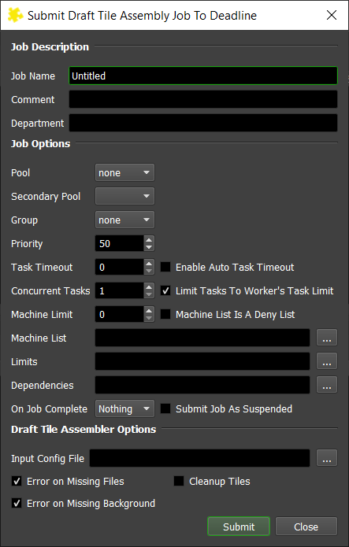

Draft Tile Assembler¶
Job Submission¶
You can submit Draft tile assembler jobs from the Monitor. Normally, these jobs are submitted as dependent jobs for your original tile jobs, but you can submit them manually if you wish.
Draft Tile Assembler uses Thinkbox’s Draft to assemble the images.
Submission Options¶
The general Deadline options are explained in the Job Submission documentation. The Draft Tile Assembler specific options are:
Input Config File: The file that will control a majority of the assembly.
Error on Missing File: If enabled, the job will error if any of the tiles in the config file are missing.
Cleanup Tiles: If enabled, the job Delete all of the tile files after the assembly is complete.
Build To Force: You can force 32 bit or 64 bit rendering.
Config File Setup¶
The config file is a plain text file that uses Key/Value pairs (key=value) to control the draft tile assembly.
TileCount=<#>: The number of tiles that are going to be assembled
DistanceAsPixels=<true/false>: Distances provided in pixels or in a 0.0-1.0 percentage range (Defaults to True)
BackgroundSource=<BackgroundFile>: If provided, the assembler will attempt to assemble the new tiles over the specified image.
TilesCropped=<true/false>: If disabled, the assembler will crop the tiles before assembling them.
ImageHeight=<#>: The height of the final image. This will be ignored if a background is provided. If this is not provided and the tiles are not cropped then the first tile will be used to determine the final image size.
ImageWidth=<#>: The height of the final image. This will be ignored if a background is provided. If this is not provided and the tiles are not cropped then the first tile will be used to determine the final image size.
Tile<#>FileName=<FileName>: The file name of the tile to be assembled. (Only used if ImageFolder is not included, 0 indexed)
Tile<#>X=<#>: The X coordinates for the tile that is to be assembled. 0 at the left side.
Tile<#>Y=<#>: The Y coordinates for the tile that is to be assembled. 0 at the bottom.
Tile<#>Width=<#>: The width of the tile that is to be cropped. (Only used if TilesCropped is false)
Tile<#>Height=<#>: The height of the tile that is to be cropped. (Only used if TilesCropped is false)
ImageFileName=<FileName>: The file name of the final output file.
ImageFolder=<Folder>: The folder that you would like to assemble images from. (If included the assembler will render all tiles within the specified Folder )
ImageExtension=<ext>: The extension that the files to be assembled. (Only used if ImageFolder is included)
Tile<#>Prefix=<Prefix>: The Prefix that the file must contain (Only used if ImageFolder is included)
Example Config Files¶
The first example config file will control a simple tile assembly.
#We are assembling 4 tiles into an image
TileCount=4
#The final image will have the following filename
ImageFileName=C:/ExampleConfig/outputFileName.png
#The final Image will have a resolution of 960x540
ImageWidth=960
ImageHeight=540
#The Images are already Cropped
TilesCropped=True
#What is the file that will be the first tile assembled
Tile0FileName=C:/ExampleConfig/_tile_1x1_2x2_sceneName.png
#Where should the first tile go
Tile0X=0
Tile0Y=0
#What is the file that will be the second tile assembled
Tile1FileName=C:/ExampleConfig/_tile_2x1_2x2_sceneName.png
#Where should the second tile go
Tile1X=480
Tile1Y=0
#What is the file that will be the third tile assembled
Tile2FileName=C:/ExampleConfig/_tile_1x2_2x2_sceneName.png
#Where should the third tile go
Tile2X=0
Tile2Y=270
#What is the file that will be the fourth tile assembled
Tile3FileName=C:/ExampleConfig/_tile_2x2_2x2_sceneName.png
#Where should the fourth tile go
Tile3X=480
Tile3Y=270
The second example config file controls a folder render. It will assemble all files within the folder C:/ExampleConfig/ that have the extension exr and have the given prefixes. So if the files region_0_test.exr, region_1_test.exr, region_2_test.exr, region_3_test.exr then this file will create the images test.exr:
#We are assembling 4 tiles into an image
TileCount=4
#In the config files we are using relative coordinates instead of pixel coordinates
DistanceAsPixels=0
#The tiles have not yet been cropped so the tile assembler has to crop each tile.
TilesCropped=false
#We are going to assemble all files within the specified folder.
ImageFolder=C:/ExampleConfig
#We are going to only assemble files with the following extension
ImageExtension=exr
#The first tile in each of the images will start with the following prefix
Tile0Prefix=region_0_
#Where should the tile go
Tile0X=0
Tile0Y=0
#Because we are cropping the tiles we need to give it a width and height to crop to
Tile0Width=0.5
Tile0Height=0.5
#The second tile in each of the images will start with the following prefix
Tile1Prefix=region_1_
#Where should the tile go
Tile1X=0.5
Tile1Y=0
#Because we are cropping the tiles we need to give it a width and height to crop to
Tile1Width=0.5
Tile1Height=0.5
Tile2Prefix=region_2_
Tile2X=0
Tile2Y=0.5
Tile2Width=0.5
Tile2Height=0.5
Tile3Prefix=region_3_
Tile3X=0.5
Tile3Y=0.5
Tile3Width=0.5
Tile3Height=0.5
Plugin Configuration¶
The Draft Tile Assembler plugin requires configuration only if choosing not to preserve the render environment while running as a specific user on Unix systems. For details, see Preserving Specific Environment Variables with Sudo.
FAQ¶
Can I use Draft Tile Assembler for a custom tile/region assembly workflow in my studio?
Sure. Just use the configuration file options as described earlier.
Does Draft Tile Assembly require much memory to assemble high-resolution still images?
No! Benchmark tests show a final 8K multi-layer (1 beauty and 6 arbitrary render passes), all 32bit float, resolution image required approximately 256Mb of system memory in total to assemble. Draft Tile Assembler is very memory efficient!
Error Messages And Meanings¶
This is a collection of known Draft Tile Assembler error messages and their meanings, as well as possible solutions. We want to keep this list as up to date as possible, so if you run into an error message that isn’t listed here, please visit the Thinkbox Help Centre and let us know.
Currently, no error messages have been reported for this plugin.

{kind=link}